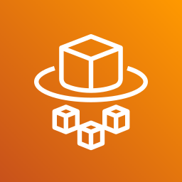

Лекція 18: контейнери: ECR, ECS, Fargate, EKS
Середній рівень: усі правила з повної лекції, але простими словами й без розповіді про наш проєкт. Повна: ../18-containers.md. Факти, які в повній лекції «з пам'яті», тут із позначкою (не звірено). Докер ви знаєте, нове тут лише спосіб запуску в AWS.
Головна ідея
ECR це склад образів, ECS це диспетчер, Fargate це «без серверів», EKS це Kubernetes. Навички: 3.1.2 (образи, теги, lifecycle), 3.3.2 (ECS task definitions, EKS manifests, Fargate, rolling updates), 3.3.1 (образ для Lambda).
Схема: docker push в ECR → task definition → ECS service (desired count) → Fargate tasks, перед ними ALB.
Навіщо це так задумано
Контейнери потрібні там, де Lambda замала: довгі процеси, особливі бінарники. Fargate прибирає клопіт із серверами, а дві ролі (task і execution) розділяють права вашого коду й платформи.
Крок 1. Словник
| Термін | Суть |
|---|---|
| ECR | приватний реєстр образів, як Docker Hub |
| ECS | оркестратор контейнерів від AWS |
| Fargate | запуск контейнерів без керування серверами |
| EKS | керований Kubernetes |
| image / tag / digest | образ / мітка / незмінний хеш |
| task definition | опис: образ, CPU, пам'ять, порти, ролі |
| task | запущені контейнери за описом |
| service | підтримує N задач |
| cluster | логічна група задач |
| launch type | Fargate чи EC2 |
| sidecar | допоміжний контейнер поруч |
Крок 2. ECR
Вхід і пуш (скорочено): aws ecr get-login-password у docker login, далі docker build, docker tag (адреса <акаунт>.dkr.ecr.<регіон>.amazonaws.com/<репо>:<тег>), docker push.
- приватний репозиторій вимагає IAM-автентифікації;
- image scanning: на вразливості ОС автоматично чи за запитом; глибше Amazon Inspector;
- реплікація в інші регіони й акаунти;
- lifecycle policy видаляє старі образи, наприклад «тримати 10 останніх»;
- tag immutability: тег не можна перезаписати.
Теги (навички 3.1.2, 3.2.4): не використовуйте latest у проді. Версія чи git SHA дають відтворюваність і відкат (:1.4.0, а не :latest). Multi-stage Dockerfile зменшує образ.
Крок 3. ECS: ієрархія
Cluster → Service (desired count, зв'язок з ALB) → Task (запущений екземпляр) → контейнери з Task Definition.
Task definition це JSON-рецепт: family, requiresCompatibilities (FARGATE), networkMode (awsvpc), cpu, memory, executionRoleArn, taskRoleArn, containerDefinitions (імʼя, образ, portMappings, logConfiguration з драйвером awslogs, secrets з valueFrom на Secrets Manager).
Крок 4. Дві ролі: головна пастка
| Роль | Хто її використовує | Приклад |
|---|---|---|
Task role (taskRoleArn) |
ваш код | читати S3, писати DynamoDB |
Execution role (executionRoleArn) |
агент ECS | тягнути образ з ECR, писати логи, читати секрети для запуску |
Симптоми:
CannotPullContainerErrorчи задача не стартує: execution role або мережа;- код отримує
AccessDeniedна S3: task role.
Крок 5. Fargate проти EC2
| Fargate | EC2 | |
|---|---|---|
| Сервери | нема | ваші |
| Оплата | за vCPU і пам'ять задачі (мінімум 1 хв) | за інстанси |
| Ізоляція | своя VM на задачу | спільний хост |
| Коли | менше клопоту | потрібні GPU, спеціальні інстанси, контроль |
Fargate це відповідь на «без керування серверами». Задача без постійного навантаження: Lambda чи Fargate. Працює 24/7 і передбачувано: можливо EC2.
Lambda чи контейнер: до 15 хв, події, сплески: Lambda. Довше, стан, спеціальні бінарники: ECS/Fargate. Є третій варіант: Lambda з контейнерним образом до 10 ГБ.
Крок 6. Деплой і масштабування
- Rolling update: scheduler стартує нові задачі, зупиняє старі, зливаючи з'єднання. Параметри
minimumHealthyPercent,maximumPercent(за замовчуванням 100% і 200%). - Blue/green через CodeDeploy: дві target groups, перемикання трафіку.
- Circuit breaker відкочує, якщо новий деплой не стає здоровим (працює лише з rolling update).
- ALB: ECS реєструє задачі сам, динамічні порти, path-based routing.
awsvpcдає кожній задачі свій ENI, тож security group працює на рівні задачі.- Автомасштабування: Target Tracking за CPU, пам'яттю чи
ALBRequestCountPerTarget(для останнього до сервісу має бути підключений Application Load Balancer).
Крок 7. EKS, Copilot, інше
- EKS це Kubernetes: manifests (
Deployment,Service),kubectl apply. Обирають, якщо вже є Kubernetes чи потрібна портативність. ECS простіше й тісніше з AWS, EKS стандарт K8s. - IRSA (через OIDC-провайдер кластера) і EKS Pod Identity (через асоціацію пода з роллю, потрібен агент Pod Identity) це аналоги task role для подів; AWS радить Pod Identity.
- AWS Copilot CLI для ECS-середовищ (згадано в навичці 3.2.4).
- Elastic Beanstalk розібрано в лекції 22.
- App Runner в in-scope не значиться.
Крок 8. VPC і доступ
Коли Lambda чи задача мають доступ до RDS у VPC (навичка 1.2.1): вказати subnets і security groups. Lambda у VPC без NAT не має інтернету. До S3 краще через gateway endpoint, до інших сервісів через interface endpoint (PrivateLink).
Крок 9. EC2 і Fargate детальніше
| EC2 launch type | Fargate | |
|---|---|---|
| Інфраструктура | ви створюєте й ведете EC2-інстанси | інстансів нема |
| Що потрібно | на кожному інстансі ECS Agent, що реєструє його в кластері | лише task definitions |
| Масштабування | додавати інстанси й tasks | просто збільшити кількість tasks |
Ролі: EC2 Instance Profile (лише EC2 launch type) використовує ECS agent: викликати API ECS, слати логи в CloudWatch, тягнути образ з ECR. Секрети з Secrets Manager чи Parameter Store для запуску задачі бере execution role, а не instance profile. Task Role задається в task definition і дає окремі права кожній задачі.
Крок 10. Автомасштабування в 3 кроки
- ECS Service Auto Scaling змінює кількість tasks за CPU, памʼяттю чи
ALBRequestCountPerTarget; працює на Application Auto Scaling. - Тип політики: Target Tracking (тримати цільове значення метрики), Step Scaling (за CloudWatch alarm), Scheduled (за часом).
- У EC2 launch type tasks потрібні інстанси: їх додає ASG (за CPU) чи Capacity Provider (сам створює й масштабує інфраструктуру, коли бракує CPU чи RAM).
Приклад: tasks ростуть із 3 до 6 за навантаженням (рівень tasks), а Capacity Provider додає EC2, бо на наявних місця не стало (рівень інстансів). Це різні речі.
Крок 11. Task definition і мережа
- У task definition: образ, порти контейнера й хоста, CPU й памʼять, змінні, мережа, IAM-роль, логування. Можна до 10 контейнерів (звірено з ECS quotas).
- EC2 (режим мережі bridge): вказали лише порт контейнера, отримали Dynamic Host Port Mapping; ALB сам знаходить порт. У режимі
awsvpctask на EC2 має власний IP, як у Fargate. На security group інстанса дозволяють будь-який порт від SG ALB. - Fargate: кожна task має свій приватний IP; вказують лише порт контейнера. На ENI задачі дозволяють порт 80 від ALB, а ALB приймає 80/443 з інтернету.
- Змінні: hardcoded (URL), Parameter Store (API keys, спільні конфіги), Secrets Manager (паролі БД), environment file в S3 (багато змінних одразу).
- Bind mounts: спільні дані між контейнерами однієї task definition, у EC2 і Fargate. Приклад: sidecar, що надсилає логи й метрики кудись іще.
Крок 12. Task placement (лише EC2)
| Стратегія | Суть |
|---|---|
| Binpack | найменше вільного за одним полем, cpu або memory (обираєте одне): мінімум інстансів, економія |
| Random | випадково |
| Spread | рівномірно за значенням (instanceId, зона доступності) |
Їх можна комбінувати. Обмеження: distinctInstance (кожна task на іншому інстансі) і memberOf (інстанс відповідає виразу Cluster Query Language). Fargate placement не підтримує.
Крок 13. ECR публічний і EKS детальніше
- ECR має приватні репозиторії та публічні (ECR Public Gallery); образи зберігаються в S3.
- EKS це альтернатива ECS з іншим API; працює на EC2 чи Fargate. Для кількох регіонів один кластер на регіон. Логи й метрики: CloudWatch Container Insights.
| Вузли EKS | Суть |
|---|---|
| Managed Node Groups | EKS створює й веде вузли в ASG; On-Demand чи Spot |
| Self-Managed Nodes | ви створюєте вузли, ведете через ASG; можна EKS Optimized AMI; On-Demand чи Spot |
| Fargate | без вузлів |
Томи в EKS: маніфест StorageClass і драйвер CSI. Підтримка: EBS, EFS (працює з Fargate), FSx for Lustre, FSx for NetApp ONTAP.
Словник
| Термін | Що це |
|---|---|
| ECR | сховище образів контейнерів |
| Task definition | опис, як запускати контейнери (образ, пам'ять, порти, ролі) |
| Task / Service | запущена група контейнерів і керування N таких tasks |
| Fargate / EC2 launch type | AWS керує серверами чи ви керуєте ними |
| Task role / Execution role | роль вашого коду чи роль, що тягне образ і секрети |
| Rolling update | заміна tasks поступово без простою |
| EKS | керований Kubernetes |
| Circuit breaker | автоматичний відкат невдалого деплою |
| ECS Agent | програма на EC2-інстансі, що реєструє його в кластері |
| Capacity Provider | сам додає EC2 для tasks, коли бракує CPU чи RAM |
| Task placement | де розмістити task на EC2: binpack, random, spread |
| Bind mount / sidecar | спільна папка контейнерів і допоміжний контейнер |
🖼 Схема: ECS: контейнери, tasks, services

Fargate- serverless compute
- AWS виділяє «комп'ютер» під контейнер
- self-managed
- роль інстанса має містити:
- ecr:GetAuthorizationToken
- ecr:BatchCheckLayerAvailability
- ecr:GetDownloadUrlForLayer
- ecr:BatchGetImage
- впав: ECS зупиняє всю task
- впав: task продовжує працювати
| Тип | Суть |
|---|---|
| Target Tracking | за цільовим значенням метрики CloudWatch |
| Step Scaling | за конкретним CloudWatch alarm |
| Scheduled | за розкладом, передбачувані зміни |
- binpack: щільно пакує в інстанси з найменшим вільним CPU чи RAM, мінімізує витрати
- spread: рівномірно по інстансах, AZ
- random: випадково серед підходящих
- distinctInstance: різні EC2
- memberOf: лише з потрібним ECS attribute
🖼 Схема: ECS: rolling update крок за кроком
| Параметр | Значення |
|---|---|
| minimumHealthyPercent | 100%: завжди має бути доступно 100% від числа tasks |
| maximumPercent | 200%: можна піднімати до 2 × desiredCount |
🖼 Схема: ECS: масштабування tasks і інстансів
- ECS Service Auto Scaling
- міняє бажану кількість tasks
- Application Auto Scaling
- ASG або Capacity Provider
- лише EC2 launch type
- додає EC2
- середній CPU сервісу
- середня памʼять
 ALB Request Count Per Target
ALB Request Count Per Target
- Target Tracking: цільове значення метрики
- Step Scaling: за CloudWatch Alarm
- Scheduled: дата й час
- tasks просто додаються
- інстансів нема
- tasks шукають місце
- вільного CPU чи RAM нема: Capacity Provider або ASG додає EC2
- є місце: Task Placement
🖼 Схема: ECS: task placement і порти за ALB
- за CPU або за RAM (одне поле): де лишиться найменше вільного
- найменше інстансів, економія
- рівномірно
- за instanceId чи ecs.availability-zone
- випадково
- кожна task на іншому EC2
- лише на інстансах за виразом Cluster Query Language
- у task definition лише порт контейнера
- Dynamic Host Port Mapping: ALB сам знаходить порт
- SG інстанса: будь-який порт від SG ALB
- кожна task має свій приватний IP й ENI
- лише порт контейнера
- SG на ENI задачі: порт 80 від ALB
🖼 Схема: ECS: ролі, змінні, EKS вузли
- твій код
- читати S3, писати DynamoDB
- AccessDenied на S3: дивись тут
- вказується в task definition
- агент ECS
- образ з ECR, логи, секрети для запуску
- CannotPullContainerError: дивись тут
- лише EC2 launch type
- агент ECS на інстансі
- API ECS, логи, ECR, секрети
| Джерело | Для чого |
|---|---|
| Hardcoded | неважливі значення, напр. URL |
| SSM Parameter Store | чутливі змінні, спільні конфіги |
| Secrets Manager | паролі БД та інші секрети |
| Environment files | файл в S3 з багатьма змінними |
- вузли EC2 створює й веде EKS
- ASG під керуванням EKS
- On-Demand чи Spot
- ви створюєте й реєструєте
- ведете через ASG
- On-Demand чи Spot
- без обслуговування
- вузлами не керуєте
Що запам'ятати на іспит
- ECR зберігає образи, ECS запускає, Fargate прибирає сервери, EKS це Kubernetes.
- Task definition це рецепт, task це запуск, service тримає кількість.
- Task role для коду, execution role для агента.
- Не
latest, а версія. Lifecycle policy чистить старе. - Rolling за замовчуванням, blue/green через CodeDeploy.
- Довше за 15 хв або спеціальні бінарники: ECS/Fargate. Понад 250 МБ для Lambda: образ до 10 ГБ.
- EC2 launch type: ECS Agent і instance profile; Fargate: лише task definitions.
- Масштабування tasks (Service Auto Scaling) ≠ масштабування інстансів (ASG, Capacity Provider).
- EC2: dynamic host port mapping; Fargate: свій IP на task, лише порт контейнера.
- Task placement тільки для EC2: binpack (економія), spread (рівномірно), random.
- Секрети: Parameter Store чи Secrets Manager; багато змінних: файл в S3.
Перевірте себе
- Контейнер не може прочитати S3. Яка роль?
- Задача не стартує: не може завантажити образ. Яка роль?
- Чим task відрізняється від service?
- Чому
latestу проді погано? - 40-хвилинна обробка відео без серверів: що обрати?
- Як автоматично видаляти старі образи?
- Який мережевий режим потрібен Fargate?
- Коли EKS замість ECS?
Відповіді
- Task role.
- Execution role (або мережа).
- Task це запуск за описом, service підтримує задане число задач і зв'язок з ALB.
- Невідомо, яка версія працює, нема відтворюваності й відкату.
- ECS на Fargate (Lambda обмежена 15 хв).
- Lifecycle policy в ECR.
awsvpc.- Коли вже є Kubernetes чи потрібна портативність.
Повна версія: 18-containers.md.